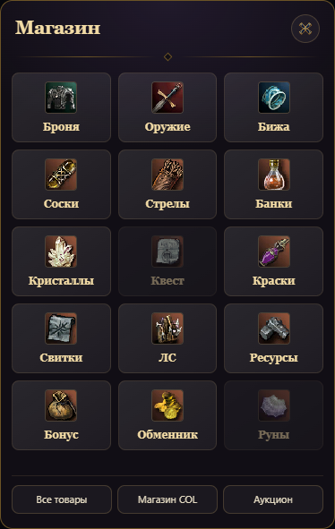
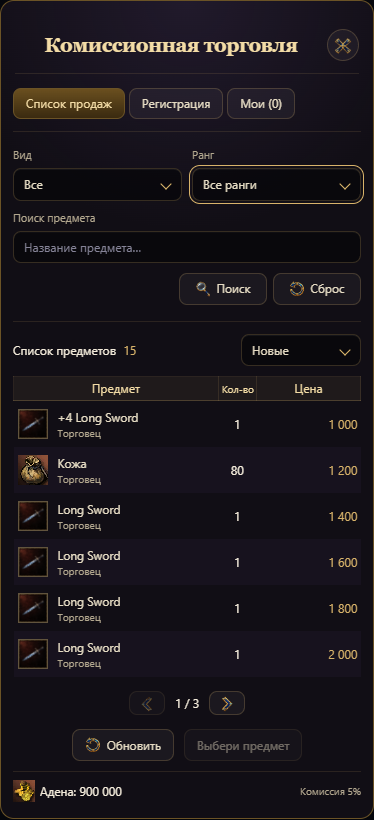
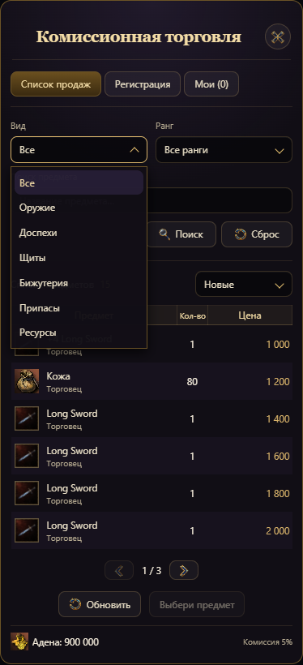
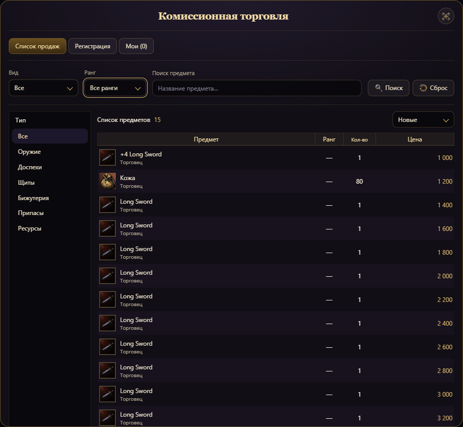

Магазин и комиссионная торговля
Структура окон из L2 в текущем стиле WhitesLove: тёмные фиолетовые панели, золотые рамки и заголовки. Иконки предметов и кнопок — WebP. Покупка, регистрация и снятие лотов используют существующую систему торговли.
Магазин

Квестовые товары и руны отмечены как отсутствующие в продаже.
Аукцион на телефоне

Шесть лотов на странице. Поиск с подсказкой и WebP-иконки кнопок.
Открытый фильтр

Выбор мышью или клавишами, закрытие по Escape.Аукцион на широком экране
